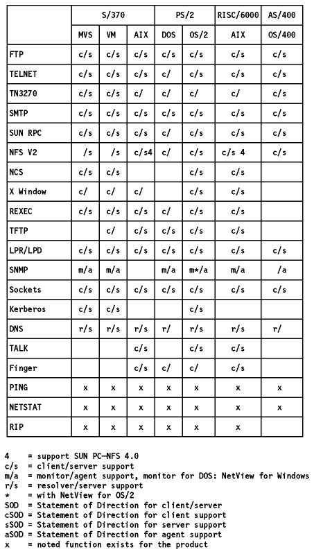
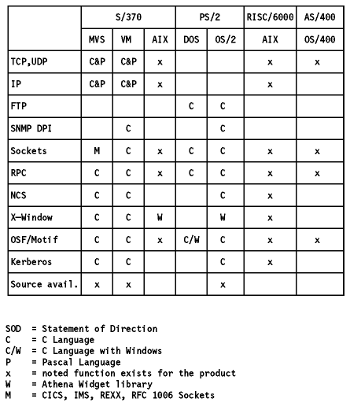

Table of Contents
Table of Contents  RFC
1006
RFC
1006The following figure shows which TCP/IP application is implemented under
which operating system.

Figure: Client/Server Relationships
The following figure shows which TCP/IP API is
implemented under which operating system.

Figure: APIs for TCP/IP
 APIs
by Protocol
APIs
by Protocol